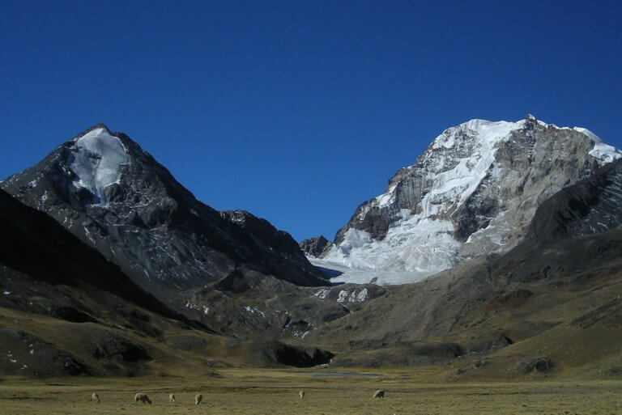

Conheça um pouquinho da história deste lugar fascinante
O povoado Centro dos Baixinhos é uma pequena comunidade rural pertencente ao município de Lago da Pedra.
Os primeiros moradores começaram a chegar na região na década de 1950.
Conheça a história desse lugarzinho tão simples e tão apaixonante
O povoado Centro dos Baixinhos é uma pequena comunidade rural pertencente ao município de Lago da Pedra.
Os primeiros moradores começaram a chegar na região na década de 1950.